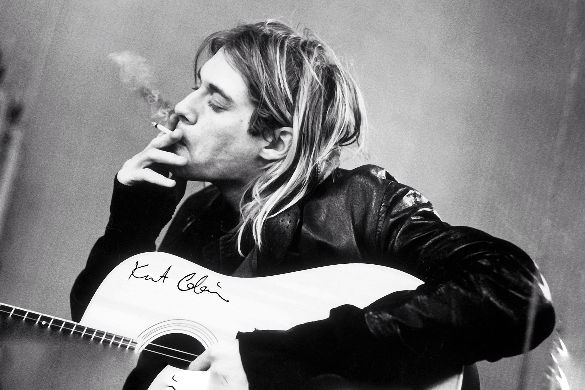

He was the Frontman and Lead vocal of
NIRVANA
to know more about Kurt form wiki
Jump to Boys

Kurt Donald Cobain was an
American singer, songwriter and
artist. He was the guitarist,
lead vocalist and primary
songwriter of the rock band
Nirvana. Through his angst
-fueled songwriting and anti
-establishment persona, Cobain's
compositions widened the
thematic conventions of mainstream rock.
I really haven't had that exciting of a life. There are a lot of things I wish I would have done, instead of just sitting around and complaining about having a boring life. So I pretty much like to make it up. I'd rather tell a story about somebody else.Then he also said
A friend is nothing but a known enemy.
something in the way